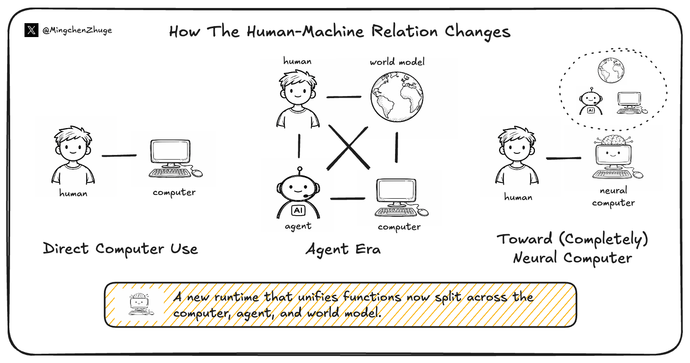

研究随笔 · Neural Computers
作者：Mingchen Zhuge 发布于 更新于
Neural Computer：一种新的机器形态，正在出现
TL;DR: 我们开始期待机器本身学会运行。
If you'd like to continue the conversation, feel free to reach out via:
- Emailmczhuge [AT] gmail.com
- X@MingchenZhuge
- WeChat


若你也曾想过：“AI 最终会成为一种计算机”，那本文就是写给你的。
过去几十年，计算机逐渐成为人类完成任务的重要媒介。最近几年，AI 也开始进入这个位置：它不再只回答问题，还开始调用工具、操作界面、参与真实工作流。问题随之变了：我们期待 AI 使用计算机，还是成为一种计算机？这也是本文所说的 Neural Computer（神经计算机，NC）想讨论的问题。
这里说的 Neural Computer，不完全指 Alex Graves 那条 NTM / DNC 路线[1][2]，也不是在谈某种新硬件（如最近的 Taalas[15]），或某个具体应用。
所以以下并不是 Neural Computer 的目标，比如：更强的 agent，计算机环境里的 world model，额外在传统计算机上再加一层智能。它关心的是，原本由程序栈、工具链和控制层承担的那部分系统职责，会不会逐渐进入模型实际依赖的 Runtime。这个念头，我想在最近一年很多人脑海里都浮现过，我先把它叫作“前共识”。
大致观点
- Neural Computer（NC）想讨论的是，模型会不会开始承担一部分原本属于机器本身的运行职责。
- 传统计算机围绕显式程序，Agent 围绕任务，World Model 围绕环境，而 NC 围绕 Runtime。
- Completely Neural Computer（完备神经计算机，CNC）是 NC 的完备态。
- 当前的一些原型，已经开始显示出早期 Runtime 原语的雏形。
- 如果能力开始进入 Runtime，并能在那里被安装、复用和治理，那么 Neural Computer 可能会重新定义“计算机”这个词。
1. 为什么是现在：“一种新的机器形态”正在出现
今天有三件事正在同时发生。
第一，agent 变得越来越会做事。 从 2023年的 MetaGPT (“古早” Coding Agents之一)[3] 只能勉强写出几百行代码，到2025年 Cursor、Codex 和 Claude Code 已经成为程序员生产力标配工具，再到今天 OpenClaw[4] 真正走入大众视野，大家关心的，已经不是 agent 偶尔把一件事做成，而是它能不能进入真实生产和日常生活，稳定处理各类事务。
对 agent 来说，现在大家更关心的 bottleneck 是：（1）长时程任务怎么保持稳定，（2）能力怎么沉淀下来，（3）流程怎么持续复用。眼下的解决办法，主要还是在 agent 的 scaffold（或 harness）这一侧继续做加法：用更强的记忆、更长的工作流和更稳的行动闭环，尽可能提高任务完成率。再往前走，一条更激进的方向是递归式自我改进：模型训练下一代模型，agent 持续改写自己[5]。


第二，world model 越来越擅长建模动态环境。 最近一年，从 GameNGen、Genie 2/3 等项目的世界模型实验，越来越多人开始相信：模型不仅能表示当前状态，还能在内部维持一个关于“下一步会发生什么”的动态结构。它本来就模拟环境演化；现在更值得注意的是，这种能力已经进入一些真实闭环。这一点在现实里那些难以低成本、反复采集的 corner case 上尤其明显。在这些场景里，rollout 正被直接用进预测、规划、控制和训练。沿着这条线看，从 Jürgen Schmidhuber 在 1990 年提出的 Making the World Differentiable[6]，到 2018 年的《World Models》[7]，再到现在 Waymo 把 world model 用进自动驾驶仿真与训练[8][9]，这条路线已经开始进入自动驾驶仿真、训练和交互式环境生成这些具体系统环节。
这也让 world model 不再只是“表示世界”，而开始朝“展开世界”和“介入世界”走。对 world model 来说，它更擅长的是先生成若干可能的未来状态，再根据这些 rollout 去做规划、筛选和行动闭环。今天这条路线已经分出几种明显方向：在自动驾驶和 physical AI 里，它主要扮演仿真与合成数据引擎的角色，用来补足真实世界里昂贵、危险或稀缺的数据，例如 Waymo World Model 和 NVIDIA Cosmos[8][10]；在 spatial intelligence 里，它追求可生成、可进入、可持续交互的 3D 世界，例如 World Labs 的 Marble[11]；在更偏实时互动世界的方向上，生成模型已经从静态内容生成走向可控、可交互、可探索的环境生成，代表性例子包括 GameNGen 对 DOOM 的实时神经模拟[12]，以及 Google DeepMind 的 Genie 2 / Genie 3[13][14]。这些方向虽然已经分化，但本质还是在解决同一类问题：怎样把环境随时间、动作和约束而演化的规律，学进系统内部。


第三，传统计算机在 AI 时代的结构性摩擦越来越明显。 今天越来越多任务不再是确定性求解，而是开放式要求；不再是一次性输入输出，而是长时程互动；不再是明确程序，而是带着模糊目标、需要持续调整的做事过程。也正因为这样，传统软件栈开始显得笨重。传统软件栈固然有稳定优势，但在许多以自然语言、示范、界面操作和弱约束为主的场景中，组织和驱动这些任务的成本已经越来越高。
传统计算机本身也在为 AI 重写底座。芯片、编译器、内存系统、软件栈都在变得更 model-friendly。但这些变化多数仍然发生在既有计算范式内部：它们让旧机器更适合 AI，却没有改写“机器是什么”。在这些变化里，像 Taalas 这样的路线把事情又往前推了一步，开始把特定模型做成一种部署单元：模型不再只是跑在机器上的负载，而是在逼近“按模型组织硬件”这条线[15]。但至少今天，这还只是部署层的变化，还谈不上通用机器形态。
这三条变化其实指向的是同一个问题。
如果 agent 越来越会做事，world model 越来越会推演，传统计算机也在为 AI 重写底座，那么会不会出现一种新的 Runtime，把执行、rollout 和能力沉淀收进同一台 learning machine？从人和机器的关系看，这里对应着一次主关系的迁移：在传统计算里，人主要和 computer 交互；到了 agent 时代，人更多是和 agent 交互，再由 agent 去调用 computer 把事情做成。world model 在这里更接近一个并行的预测层：它既可以服务于 human，也可以服务于 agent，但本身不负责把事情做成。再往前推，NC 要改的是机器本身：它试图把今天分散在 computer、agent 和 world model 之间的职责，收拢到同一台 learning machine 内部。那时，人面对的就不再只是“agent 代替自己调用 computer”，而是直接使用这样一台神经计算机。
{kind=link}

这也意味着，交互本身会开始带上“编程”的意味。今天，自然语言指令、键鼠轨迹、屏幕变化和任务反馈，大多只是过程日志；在 NC 的设定里，它们会变成塑造未来行为的材料。今天我们主要通过代码安装能力；以后，示范、交互轨迹和约束本身，也可能成为能力进入 Runtime 的入口。
2. 什么是 Neural Computer，什么才算它真正成立？
先看这张表：它把传统计算机、Agent、World Model 和 Neural Computer 放到同一把“尺子”上来比较。看完这张表，区别和联系就很清楚了：它们各自围绕什么组织，source of truth 落在哪里，又分别承担什么职责。
| 形态 | 围绕什么组织 | source of truth 落在哪里 | 主要职责 |
|---|---|---|---|
| 传统计算机 | 显式程序 | 显式程序与显式状态 | 稳定执行显式程序 |
| Agent | 任务 | 外部环境、工具链与工作流 | 在既有环境中完成任务 |
| World Model | 环境 | 状态演化模型 | 预测与推演环境变化 |
| Neural Computer | Runtime | Runtime 里的能力与状态 | 让机器持续运行、沉淀能力并治理更新 |
接下来可以直接设想：如果 NC 已经存在，人会怎么使用它？对传统计算机，你安装的是软件；对 agent，你描述的是任务；对 NC，你做的更接近给机器安装能力，并期待这些能力以后继续留在机器里。
也正因为如此，这里说的 Runtime，不是某个软件组件，而是系统靠什么持续成为同一台机器的那一层：什么会留下来，什么推动状态继续往前走，什么输入真正改变机器，什么变化已经等于把机器重写了一次。对 NC 来说，关键不在于再叠一层外部工具，而在于能力和状态能不能真正进入同一个 learned runtime。
如果它成立，机器会长得像什么？
第一，它未必会继续沿着今天这条 foundation model 路线发展下去。 今天更自然的想法，是把模型继续往 1B - 10T 级的 dense / MoE foundation model 推大、推强；很多工作也确实沿着这条路在前进。但在我的想法里，NC 真正成熟以后，底座更可能往另一边走：10T - 1000T 级，更稀疏、更可寻址、带一点 circuit 气质。未来的 CNC 也许不是一团越来越大的连续表征，而会更像一套可路由、可组合、局部更容易检查的机器底座。它未必要模仿动物感知或人脑，反而可能更接近一种带有 NAND 气质的神经网络：离散、稀疏、局部可验证。至少目前，这条路还没被系统展开。OpenAI 最近在 weight-sparse transformers 上做的一些工作，只能算其中一个信号；更重要的是，这背后其实是 AI 里一条更老、也更丰富的思路，尤其在强化学习里，稀疏结构、局部分工和路由机制一直都和系统如何学习、如何行动直接相关[16]。
第二，它也未必总靠整体改参数来升级自己。 NC 指向的则是另一种进化方式：靠 Runtime 的自编程与持续交互，让机器沿内部能力结构持续自进化。用户输入不再只是触发一次性行为，而会逐渐安装、调用、组合并保留可复用的 neural routines，甚至形成以后还能继续调用的内部 executor（执行单元）。至少在功能分工上，它更接近传统计算机里的“内存”，而不是处理器：升级未必意味着重写整台机器的本体，也可能只是把这些新结构稳定写进一层可寻址、可调用、可保留的内部状态。顺着这条路往前走，升级也不再只是“换一个更大的 model”，而更像是在机器内部持续安装新部件。若干年前的 NPI 和 HyperNetworks，也能看作相似但还不完整的早期思路：前者试图把复杂程序拆成可调用、可组合的子程序[17]；后者则提示，机器甚至可能继续生成下游 neural modules，去扩展自己的能力边界[18]。当然，我认为野心可以更大一点，一个足够强的 Neural Computer，完全可能直接生成新的 (sub-)NNs，再把它们以可插拔的方式挂进自身内部，像今天安装或卸载软件一样自然，只是这一次省掉了手写代码和编译这一层中介。
第三，它还可能把 world model 式的 rollout 逐渐收进 Runtime 里。 到那时，rollout 会慢慢变成机器的日常机制，也会变成这种自编程和自进化的一部分。人类可以给出输入、期待的输出（GT），也可以只提前写好评估指标；甚至在某一轮里什么都不再给，Runtime 也可以在内部持续 self-play、自测、筛选和压缩候选做法，再把有效改进沉淀成下一轮能力更新。理想状态下，人去睡觉时，机器还在内部完成评估、试错和迭代。真正留下来的，不只是更多上下文，而是内部能力结构本身已经发生了变化。当然，这一切的前提不是放任系统偷偷变化，而是 update 路径本身可被治理。
这样看，NC 作为一种机器形态的轮廓就比较清楚了。关键在于，能力有没有真正进入 Runtime，并在那里被安装、复用、执行和治理。CNC 说的，就是这件事做成之后的样子（完备态）。按原论文的定义，一个 NC 实例只有在同时满足四个条件时，才可以算作 CNC：它必须是 Turing complete、universally programmable、除非被显式重编程否则保持 behavior-consistent，并体现 NC 相对传统计算机的架构与编程语义。下面这张表，是对原论文这四条要求的一个更直白的总结。
| CNC 条件 | 内涵 | 工程上大概要看到什么 |
|---|---|---|
| Turing complete | 不是只能完成几类固定任务，而是在原则上具备通用计算的表达能力。 | 但“可表达”不等于“可执行”：真正要看的，是随着有效 memory 和 context 增长，同一个 NC 能否稳定承接更长、更复杂的算法过程，而不是任务一拉长就换一种失效方式。 |
| Universally programmable | 输入给它的，不该只触发一次行为，而应该能真正安装成之后还能调用的 routine 或内部 executor。 | 能力可以被安装、调用、组合、保留，并在进入 Runtime 后跨任务稳定复用。 |
| Behavior-consistent | 日常使用不应偷偷改变机器；行为变化只能来自显式更新。 | 同一版本下的行为应当可复现，执行与更新轨迹都可追踪，出了问题能 replay / rollback，长时程 drift 可以被测量和治理。 |
| Machine-native semantics | 它不只是用神经网络去模仿旧计算机，而是开始形成自己的机器语义和编程方式。 | 神经底座能够靠组合、路由、连续状态和内部执行结构，带来传统栈不擅长的能力；同时，instructions、demonstrations、traces 和 constraints 本身也开始成为编程入口，而不再只有手写代码。 |
3. 论文实现的原型：它证明了什么，还缺什么
按我的判断，Neural Computer 真正成形，大概还要三年。所以，和我真正设想的 Neural Computer 相比，我们论文里的工作还只是很早的一步。放在今天，我认为最顺手的统一载体，还是这类面向视频生成和 world model 的神经网络；要先把像素、动作和时间 rollout 放进同一个端到端原型里，它们也是最快的一条路。我们现在借它们验证的，只是 NC 的部分关键能力。它们更像过渡性的实现参考，而不是 NC 的最终结构；如果真要走到 CNC，最后仍然需要一次更彻底、自底向上的重建。
3.1 CLIGen (General)：以假乱真的“计算机模仿游戏”
先看 terminal rendering 能不能站住：配色、光标、滚动、TUI 和整体节奏感。
先看第一组实验生成出来的结果。如果不认真看，它们已经有点以假乱真。对 CLIGen (General) 来说，这里首先能看到的是，video models 已经能把 terminal rendering 做到足够像真。主流视频模型本来就不是为这种文字密集、强依赖离散布局的计算机场景训练的；但经过进一步训练以后，“计算机模仿游戏”（Imitation Game for Computers）确实已经可以做出来。
CREATE TABLE posts (ID INTEGER), with the terminal displaying the command in a dark background with colored syntax highlighting, including green and yellow text, and the cursor moving character-by-character as the user types, with some corrections and backspacing along the way. The output shows the command being executed, with key words like CREATE and TABLE in distinct colors, and the filename posts appearing in the command line.\u001b[48;2;255;128;128;38;2;0;0;0m which set the background to a shade of pink and text to black, and printing numbered lists with colors. The output includes specific numbers, such as "1", "5", "7", and "9", in different colors, creating a visually dynamic and colorful display, but the exact username, hostname, and path are not specified in the provided terminal session content.这一组先学到的，是终端最外层的那些东西：配色怎么变，光标怎么闪，窗口比例稳不稳，长日志怎么滚，全屏 TUI、进度条和状态栏怎么出现。最先站住的，也是终端这层表象和节奏。借前文的说法，这里最先被学到的，还是 Runtime 的外观。
放回 2025 年 9 月看，这个实验结果是让人惊喜的。只用约 1,100 小时富有噪声的终端数据集，就把原本几乎不懂计算机界面、连稍微小一点的文字都很难生成的 Wan2.1[31]，拉到了能稳定生成 terminal 表示的程度，对常见命令、回显和日志形态也已经有了相当可观的浅层对齐。对视频生成来说，这种文字密集、变化快、带闪烁、又几乎没有自然动态的场景，本来就是最难的一类；但这个结果确实超出了当时不少人的预期。这里用的还是 terminal 领域的 general 视频，风格很多，场景也很杂。terminal rendering 先站住了，后面鼓励我们去尝试计算机里那些更硬的东西：记忆、推理、编程和执行。
3.2 REPL 和 Math：它不再只“画终端”
这里关注的是更硬的 execution 结构：输入、回车、回显、局部编辑和状态延续。
Terminal rendering 的初步实验之后，更有趣的问题是：终端能不能被当成一个能被动作稳定推动的局部机器来测。敲一个命令，buffer 会不会往前走；按一次回车，回显会不会跟着出来；输错、删改、重打之后，状态还能不能接着延续。REPL 和 Math 在这里其实是同一件事的两个侧面：模型到底有没有开始学到一点终端里的状态转移规律。
Type "env | head -n 5"
Enter
Sleep 600ms
Hide
Type "date"
Enter
Sleep 300ms
Type "whoami"
Enter
Sleep 300ms
Type "date"
Enter
Sleep 300ms
Type "whomai"
Enter
Sleep 300ms
Type "whomai"
Enter
Sleep 300ms
Hide
Type "top"
Enter
Sleep 2s
Down 3
Sleep 600ms
Up 2
Hide
Type "echo $HOME"
Sleep 90ms
Enter
Sleep 1442ms
Hide
Type "id"
Enter
Sleep 400ms
Hide
Type "pwd"
Enter
Sleep 400ms
Hide
Type "python - <<'PY'"
Enter
Type "import time"
Enter
Type "for i in range(18):"
Enter
Type " print(f'Frame
{i:02d} ::' + '>' * (i % 20))"
Enter
Type " time.sleep(0.2)"
Enter
Type "PY"
Enter
Sleep 4000ms
Hide
Type "seq 1 28 | paste -
d',' - - - - | column -t -s','
| tee metrics_7x4.txt"
Enter
Sleep 2000ms
Hide
Type "echo History size:
$HISTSIZE"
Sleep 120ms
Enter
Sleep 400ms
Type "cal"
Sleep 120ms
Enter
Sleep 400ms
Type "echo Home:
$HOME"
Sleep 120ms
Enter
Sleep 400ms
Sleep 400ms
Hide
Sleep 180ms
Type "echo Learning shell
basics"
Sleep 120ms
Enter
Sleep 400ms
Type "date +%Y-%m-%d"
Sleep 120ms
Enter
Sleep 400ms
Type "echo Login shell: $0"
Sleep 120ms
Enter
Sleep 400ms
Type "uname -r"
Sleep 120ms
Enter
Sleep 400ms
Sleep
Type "python"
Enter
Sleep 400ms
Type "5"
Enter
Sleep 400ms
Type "exit()"
Enter
Sleep 400ms
Hide
Type "python"
Enter
Sleep 1s
Type "10+15"
Enter
Sleep 800ms
Hide
Type "python"
Enter
Sleep 1s
Type "40/1"
Enter
Sleep 800ms
Hide
现在，重点转到指令运行的因果结构上。这一组训练数据来自更干净、更可重复的脚本轨迹：我们自己通过脚本和 Docker 环境去生成这批终端视频，让输入、回车、回显、报错和局部编辑都落在一个更稳定的终端环境里。
从这组结果里已经能看出，模型学到了一些 computer terminal 最基本的运行规律。像 pwd、date、whoami、echo $HOME、env | head -n 5 这类非常简单的指令，输入、回车、回显和结果展示已经可以做得相当接近真实；不同命令该出现什么样的输出形态，也和对应的终端场景对上了。和上一部分实验相比，指令本身已经能推动字符更新、回显生成和局部状态变化，终端也会按照自己的运行方式展开。
沿着这条线继续往前走，模型在简单数学场景里其实也已经摸到了一些东西，但推理能力本身还没有真正解决。到了两位数加法这种最基础的算术层，当前模型依然很难稳定算对。这里当然有数据量的问题：我们还没给模型足够多、足够硬的训练数据去逼出稳定推理；但也有另一种更根本的可能性：用当前这类 DiT-based 视频模型去承载稳定推理，本身就可能是个伪命题。眼下更稳妥的判断是，terminal execution 这一层已经开始立住，symbolic reasoning 这一层还没有过关。
3.3 GUIWorld：界面操控也开始成立
最后看动作能不能真实推动界面状态：点击、悬停、输入和窗口反馈能不能闭合。
在 CLI 阶段，我们已经大致看清楚了：视频模型的渲染能力很强，基础的记忆和执行能力也开始出现，但最底层的 symbolic reasoning 还不够好。到了 GUIWorld，重点又变成了：界面状态会不会被动作推着走。
| Conventional Computer (GT) | Neural Computer (Generation) |
|---|---|
|
|
|
|
|
|
|
|
|
|
|
|
|
|
|
|
|
|
|
|
|
More Comparisons
上面是 7 组重点对照；下面还有更多的直接视觉对照样本，作为补充 gallery 提供给读者快速浏览。
GUIWorld 直接把问题从 CLI 推到了 GUI。走到这里，问题已经不再主要是文本和命令，而是真实的键盘鼠标 action：鼠标要落点，悬停要出反馈，点击之后按钮、下拉框、模态窗和输入框都要真的变状态，键盘输入也要一帧一帧把界面往前带。
对应的数据已经是一套相当完整的交互 rig：我们先在 Ubuntu 22.04 的 XFCE4 桌面里固定了 1024×768、15 FPS 的环境，再把整个桌面运行、录制和动作回放流程都搭了起来，这样每一步点击、悬停、输入和界面变化都能被稳定记录下来。数据分成三块：约 1000 小时的 Random Slow、约 400 小时的 Random Fast，以及约 110 小时由 Claude CUA 驱动的真实交互 goal-directed trajectories。前两者试探的是，鼠标加速度、停顿、悬停、窗口切换这些开放世界噪声会怎样影响模型；后者则给出更清晰的 action-response 对，看看模型是否学会：做了这个动作之后，界面能不能相应触发合适的改变。
模型这边没有只试一种 action 注入方式，而是并排做了四个版本。它们的核心区别不在于“有没有加入 action”，而在于 action 到底在多深的层里进入主干、参与状态演化。论文里的 Figure 7 正好把这四种方式画得很清楚：

| 模型 | 原文名 | 注入方式 | 对应路线 |
|---|---|---|---|
| 模型一 | External | 输入侧 latent 调制 | 浅层 action-conditioned baseline |
| 模型二 | Contextual | action token 并入主序列 | WHAM[33] |
| 模型三 | Residual | 旁路 residual branch 注入 | ControlNet[34] |
| 模型四 | Internal | block 内 action cross-attention | Matrix-Game 2.0[32] |
从最终实验结果来看（这里先省略细节）：四个模型设计里，模型四的综合结果最好。这组结果表明，对于 GUI 这种细粒度、强时序、强局部交互的环境，把 action 直接打进 block 内部，最容易让模型把“动作之后界面怎样继续走”学进主干里。与此同时，110 小时的 supervised data 明显好于约 1400 小时 random data；显式光标视觉监督也比单纯坐标监督强得多。合在一起看，GUIWorld 最直白的结论是：GUI 这条线最缺的是更硬的动作语义、更明确的状态转移，以及把光标当成视觉对象来监督。
虽然一开始很少有人看好视频模型能处理这种高度离散、文字密集、动作敏感的计算机场景，但只要任务设计和数据组织得当，它在界面渲染、页面切换、短时状态延续、局部交互、执行回显，甚至一些非常初步的工作记忆上，都已经能给出很多有意思的结果。换句话说，video models 也许离终局还很远，但作为早期原型的容器，已经足够把不少原本抽象的 Neural Computer 问题先摆到台面上。
3.4 从 Prototype NC 到 CNC，还差什么
把第 2 节那张 CNC 条件表重新拿回来，当前原型的大致结论已经比较清楚了：Turing complete 只触到边缘，universally programmable 还只是入口出现，behavior-consistent 只在受控环境里局部成立，machine-native semantics 则方向比结论更清楚。NC 要解决的不是把 agent、world model 和传统 computer 简单叠加，而是把今天分散在这些对象里的部分职责，逐步收回同一个 learned runtime。当前原型真正重要的地方，不是它已经逼近终局，而是它把决定 CNC 能不能成立的几道硬门槛提前暴露出来。
4. 如果 Neural Computer 成立，软件、硬件和“程序”都会改变
如果把关系再说清楚一点，Neural Computer 首先是一种对下一代 computer 的判断。但我有预感，它未来最强的竞争压力，会来自具备强记忆、强工具调用和持续在线能力的 personalized super agent。下面这张表把这三者并排放在一起看。
快速看表：先看“你实际得到的东西”“经验怎么沉淀”“安装的是什么”。
| 传统计算机Conventional Computer | 未来个性化超级代理(Future) Personalized Super Agent | 完备神经计算机(Completely) Neural Computers | |
|---|---|---|---|
| 基本定位 | |||
| 你实际得到的东西 | 一台精确执行你写好程序的机器 | 一个长期在线、记忆极强、善于调用工具替你办事的代理人 | 一台会被你的经验持续塑造、能力逐渐进入内部的机器 |
| 围绕什么组织 | 显式程序 | 任务流 持续运行，但能力仍由外部栈提供 |
runtime 持续运行，能力本身住在机器内部 |
| 经验怎么沉淀 | 你手动翻译成代码、配置和规则 | 写进 memory、vector store、workflow、skill.md、MCPs 和 prompts；下次再被检索、注入和编排 | 直接进入 runtime；开始参与后续运行，而不再只是被检索的内容 |
| 安装与进化 | |||
| 安装的是什么 | 软件、库、脚本和服务 | tools、workflow、memory 条目、skill 描述 | 能力本身，以及可被安装、调用和组合的 sub-NNs |
| 进化方式 | 靠抽象、接口和程序复用；机器本身几乎不会自进化 | 靠 foundation model 的泛化与持续交互；系统沿外部栈逐步自进化 | 靠 runtime 的自编程与持续交互；机器沿内部能力结构持续自进化 |
| 底座形态 | 不适用 | 更像今天这条路：1B - 10T 级的 dense / MoE foundation model | 更像下一代底座：10T - 1000T 级、更稀疏、更可寻址、带一点 circuit 气质的机器 |
| 产业位置 | |||
| 在 AI stack 里的位置 | 主要对应 chips / infrastructure 层 | 主要跨 models + applications 两层 | 最直接改写 models 与 applications 的边界，并进一步倒逼部分 infrastructure 围绕 runtime 重组 |
| 当前成熟度 | 完全成熟 70+ 年工程积累，仍然是绝大多数系统的底座 |
已可用，并会继续快速变强 Claude、Cursor、OpenClaw 一类系统已经给出早期形态 |
方向可能成立，形式上的原型也已经出现，但仍谈不上可用 Completely Neural Computers 的四条条件未满足 |
如果 CNC 真的成立，最先改变的会是交付对象和系统的组织方式。今天被装进去的还是软件、工具、workflow 和 memory 条目；到了 NC 这条路上，慢慢被装进去的，更像是能力本身。代码当然还会在，但它不再是唯一入口；说明、示范、操作轨迹和约束，也会开始直接承担“装能力”这件事。“程序”这个词的含义也会跟着变化：它不再只是一段代码，而更像一项能被安装、组合、版本化和持续更新的能力对象。
再往后，变化会一路传到系统栈和机器边界本身。软件怎么搭、硬件怎么配、更新怎么治理、问题怎么追踪，都会越来越围绕同一台持续运行的机器重新组织。手机、浏览器、IDE、终端这些入口还会在，但会越来越像接入同一台机器的不同窗口。到最后，被改写的不只是某个工具栈，而是“计算机”这个词本身的含义。
声明与致谢：本博客内容与观点代表大部分 Neural Computer 论文的初衷，以及 Mingchen Zhuge 的个人观点。感谢 Wenyi Wang、Haozhe Liu、Shuming Liu、Yuandong Tian 与 Dylan R. Ashley 提供的审阅意见。文中部分图示与素材引自原始论文及相关公开材料。
引用
如果你想引用这篇内容，可以直接使用下面的 arXiv 条目或博客条目。
arXiv BibTeX
@misc{zhuge2026neuralcomputers,
title = {Neural Computers},
author = {Mingchen Zhuge and Changsheng Zhao and Haozhe Liu and Zijian Zhou and Shuming Liu and Wenyi Wang and Ernie Chang and Gael Le Lan and Junjie Fei and Wenxuan Zhang and Yasheng Sun and Zhipeng Cai and Zechun Liu and Yunyang Xiong and Yining Yang and Yuandong Tian and Yangyang Shi and Vikas Chandra and J{\"u}rgen Schmidhuber},
year = {2026},
eprint = {2604.06425},
archivePrefix = {arXiv},
primaryClass = {cs.LG},
url = {https://arxiv.org/abs/2604.06425}
}
Blog BibTeX
@online{zhuge2026neuralcomputerblog,
author = {Mingchen Zhuge},
title = {Neural Computer：一种新的机器形态，正在出现},
year = {2026},
month = feb,
day = {7},
url = {https://metauto.ai/neuralcomputer/index_cn.html},
note = {Research essay},
urldate = {2026-04-06}
}
参考文献
- [1] Alex Graves, Greg Wayne, and Ivo Danihelka. Neural Turing Machines. arXiv:1410.5401, 2014.
- [2] Alex Graves et al. Hybrid computing using a neural network with dynamic external memory. Nature 538, 471-476 (2016).
- [3] MetaGPT: Meta Programming for A Multi-Agent Collaborative Framework. ICLR 2024.
- [4] OpenClaw. GitHub repository.
- [5] Mingchen Zhuge et al. AI with Recursive Self-Improvement. ICLR 2026 Workshop Proposals.
- [6] Schmidhuber, Jürgen. Making the world differentiable: on using self supervised fully recurrent neural networks for dynamic reinforcement learning and planning in non-stationary environments. Vol. 126. Inst. für Informatik, 1990.
- [7] David Ha and Jürgen Schmidhuber. World Models. 2018.
- [8] The Waymo World Model: A New Frontier For Autonomous Driving Simulation. Waymo Blog.
- [9] Demis Hassabis on Waymo World Model and Genie 3. X post.
- [10] NVIDIA Research. Cosmos World Foundation Models. NVIDIA, 2025.
- [11] World Labs. Marble: A Multimodal World Model. World Labs, 2025.
- [12] Dani Valevski, Yaniv Leviathan, Moab Arar, and Shlomi Fruchter. GameNGen: Diffusion Models Are Real-Time Game Engines. Project page, 2024.
- [13] Google DeepMind. Genie 2: A large-scale foundation world model. DeepMind Blog, 2024.
- [14] Google DeepMind. Genie 3: A new frontier for world models. DeepMind Blog, 2025.
- [15] Ljubisa Bajic. The Path to Ubiquitous AI. Taalas.
- [16] Leo Gao, Achyuta Rajaram, Jacob Coxon, Soham V. Govande, Bowen Baker, and Dan Mossing. Weight-sparse transformers have interpretable circuits. arXiv:2511.13653, 2025.
- [17] Scott Reed and Nando de Freitas. Neural Programmer-Interpreters. arXiv:1511.06279, 2015.
- [18] David Ha, Andrew Dai, and Quoc V. Le. HyperNetworks. arXiv:1609.09106, 2016.
- [19] David Silver and Richard S. Sutton. Welcome to the Era of Experience. Preprint of a chapter to appear in Designing an Intelligence. 2025.
- [20] Sam Altman. The Gentle Singularity. Sam Altman Blog. Accessed March 15, 2026.
- [21] Dario Amodei. The Adolescence of Technology. Dario Amodei, January 2026.
- [22] Demis Hassabis, Dario Amodei, and Zanny Minton Beddoes. The Day After AGI. World Economic Forum Annual Meeting 2026 session, January 20, 2026.
- [23] Carver Mead. How we created neuromorphic engineering. Nature Electronics 3, 434-435 (2020).
- [24] Mingchen Zhuge, Wenyi Wang, Louis Kirsch, Francesco Faccio, Dmitrii Khizbullin, and Jürgen Schmidhuber. GPTSwarm: Language Agents as Optimizable Graphs. Proceedings of the 41st International Conference on Machine Learning, PMLR 235:62743-62767, 2024.
- [25] Mingchen Zhuge, Changsheng Zhao, Dylan R. Ashley, Wenyi Wang, Dmitrii Khizbullin, Yunyang Xiong, Zechun Liu, Ernie Chang, Raghuraman Krishnamoorthi, Yuandong Tian, Yangyang Shi, Vikas Chandra, and Jürgen Schmidhuber. Agent-as-a-Judge: Evaluate Agents with Agents. Proceedings of the 42nd International Conference on Machine Learning, PMLR 267:80569-80611, 2025.
- [26] Wenyi Wang, Piotr Piękos, Li Nanbo, Firas Laakom, Yimeng Chen, Mateusz Ostaszewski, Mingchen Zhuge, and Jürgen Schmidhuber. Huxley-Gödel Machine: Human-Level Coding Agent Development by an Approximation of the Optimal Self-Improving Machine. arXiv:2510.21614, 2025.
- [27] ICLR 2026 Workshop: AI with Recursive Self-Improvement. Workshop website.
- [28] Peter H. Diamandis. Elon Musk: Optimus 3 Is Coming, Recursive Self-Improvement Is Already Here, and the Singularity #239. YouTube, March 11, 2026.
- [29] I. J. Good. Speculations Concerning the First Ultraintelligent Machine. Advances in Computers, Volume 6, 1966.
- [30] Jürgen Schmidhuber. Gödel Machines: Self-Referential Universal Problem Solvers Making Provably Optimal Self-Improvements. IDSIA Technical Report, revised December 27, 2004.
- [31] Wan Team. Wan: Open and Advanced Large-Scale Video Generative Models. arXiv:2503.20314, 2025.
- [32] Xianglong He et al. Matrix-Game 2.0: An Open-Source, Real-Time, and Streaming Interactive World Model. arXiv:2508.13009, 2025.
- [33] Anssi Kanervisto et al. World and Human Action Models towards gameplay ideation. Nature, 2025.
- [34] Lvmin Zhang, Anyi Rao, and Maneesh Agrawala. Adding Conditional Control to Text-to-Image Diffusion Models. ICCV 2023.